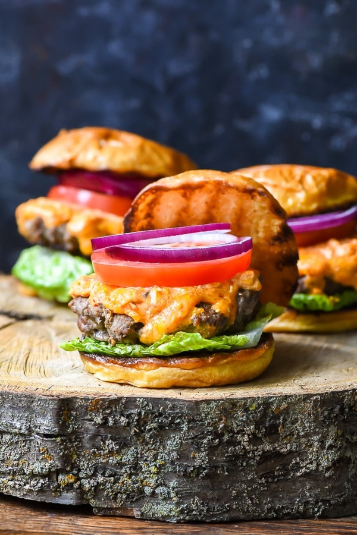

Pimento Cheese Burger Recipe

Yield: 4 Burgers Prep Time: 15 Minutes Cook Time: 15 Minutes
These Pimento Cheeseburgers combine the creamy, melty, mildly sweet heat of pimento cheese with a juicy burger!
INGREDIENTS
For the pimento cheese:
- 2 cups shredded sharp cheddar cheese
- 6 ounces cream cheese
- 3 tablespoons mayonnaise
- 4 ounce jar pimento peppers, drained and chopped
- 1/2 teaspoon Old Bay seasoning
- 1/2 teaspoon Tobasco sauce
- salt to taste
For the burgers:
- 1 1/2 lbs ground beef
- 1 1/2 teaspoons Old Bay seasoning
- fresh black pepper
- 1 teaspoon salt
- pat of butter (optional)
To serve:
- sliced tomato
- leaf lettuce
- sliced red onion
INSTRUCTIONS
- In a stand mixer or a bowl, combine the cheddar cheese, cream cheese, mayonnaise, pimentos, Old Bay Seasoning, and Tabasco. Blend on medium speed until smooth and creamy. Season with salt to taste.
- In another bowl, gently combine the ground beef, Old Bay, salt, and pepper. Using your hands, divide the burger meat into four equal sized patties. Press your finger into the center of each patty so there's an indent. This will keep your burgers from doming in the center when cooked.
- Heat a grill or cast iron skillet over medium high heat. If you're using a cast iron skillet, add a pat of butter and let it melt. Grill or fry the burgers for 4-5 minutes on each side, flipping only once, or until you reach an internal temp of 160 degrees for medium burgers. Add big scoops of the pimento cheese to the top of the burgers and cover for the last two minutes of cooking time to allow the cheese to melt.
- Meanwhile, butter the sandwich buns and grill them alongside the burgers for about a minute. Serve burgers with slices of lettuce, red onion, tomato, and more pimento cheese if desired.